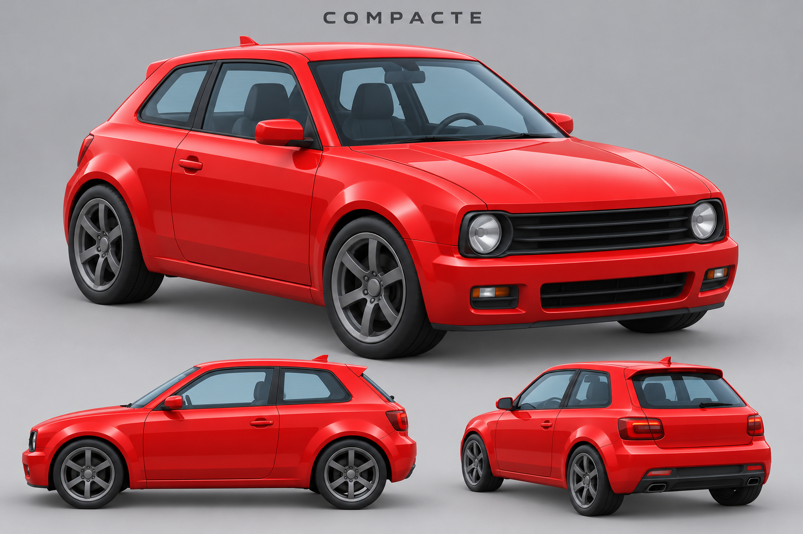
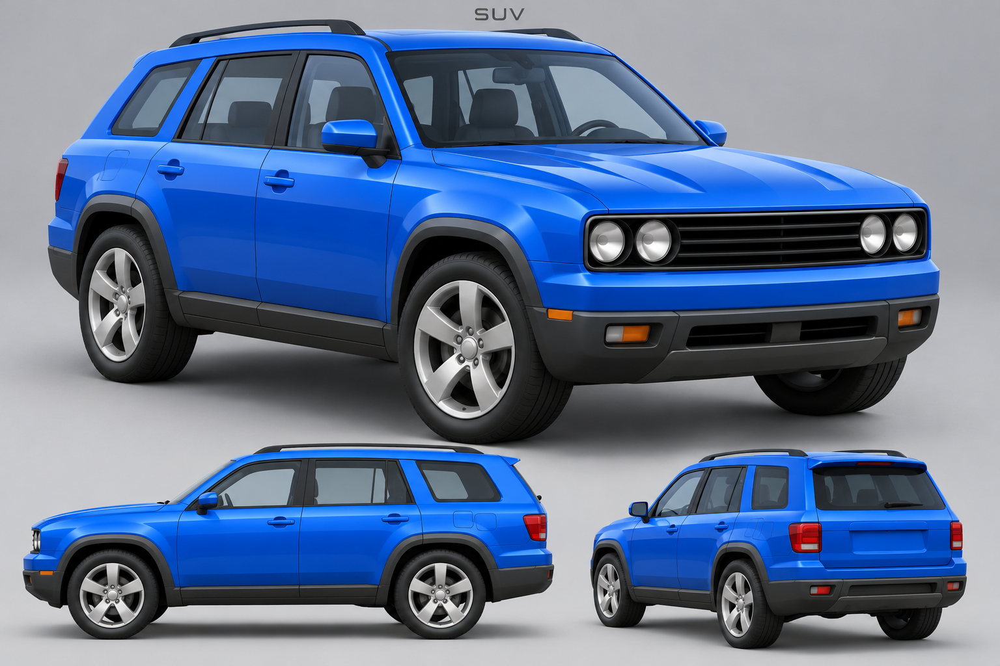
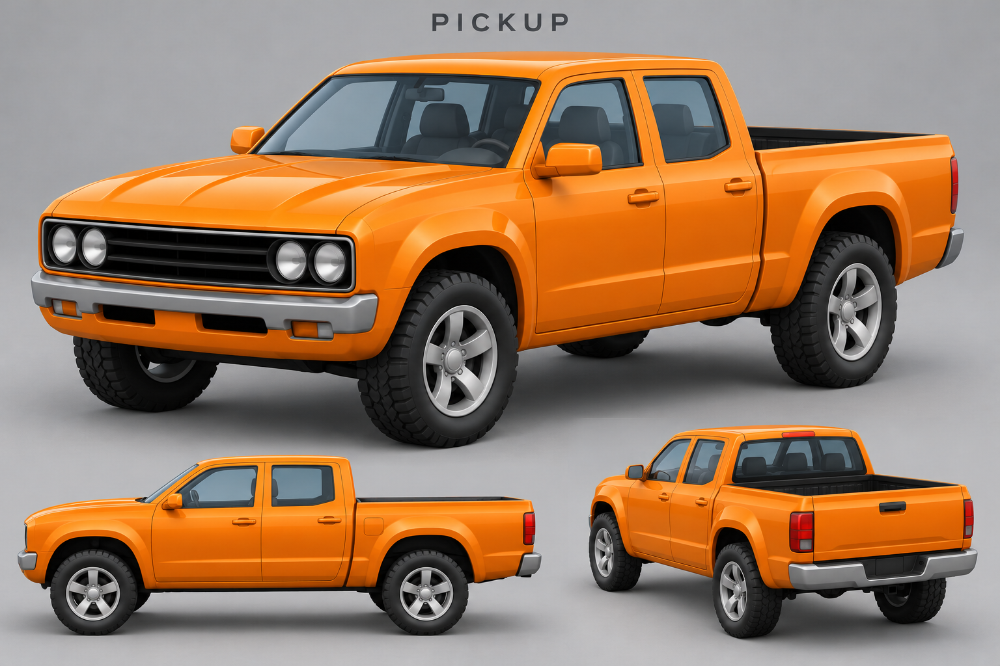
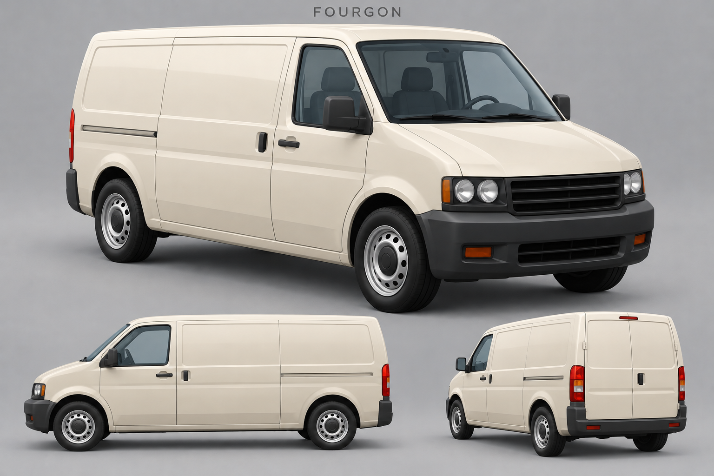
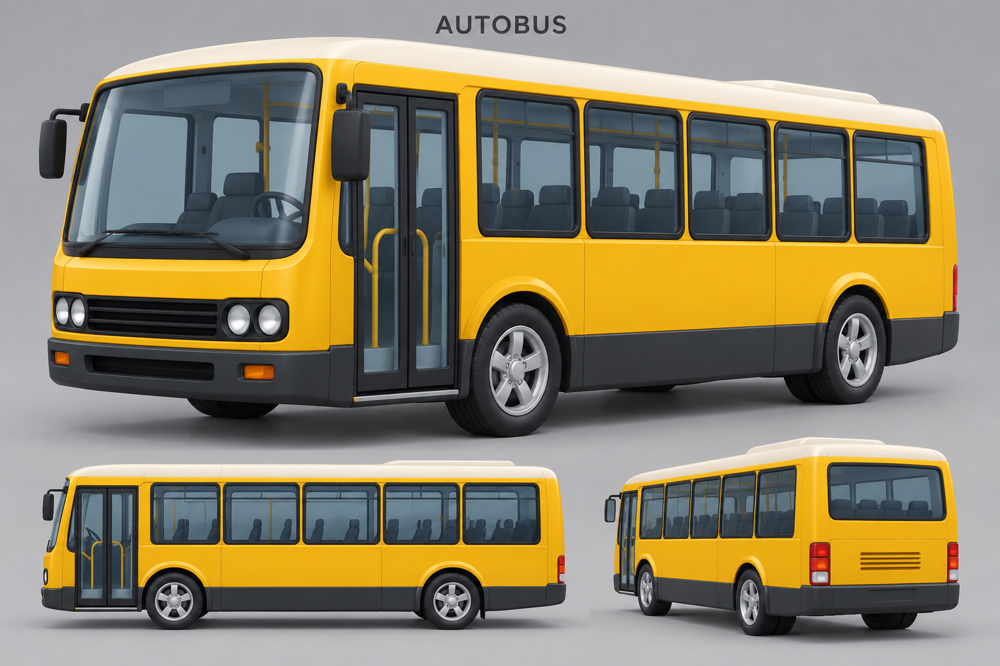

Berline — premier prototype

Références originales dans le style du muscle car. Seule la première berline est actuellement modélisée dans cet atelier; les autres modèles restent à construire.
Retour au prototype de la berline




